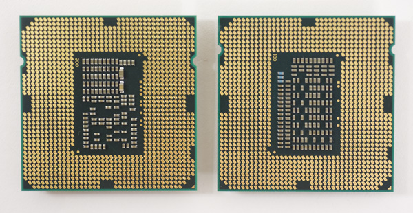
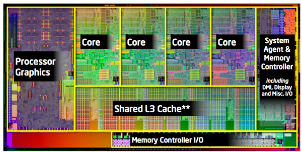
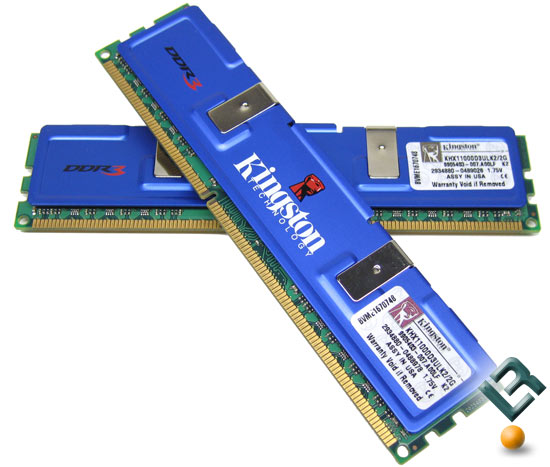
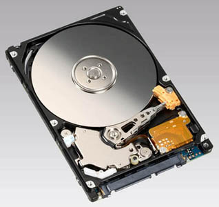
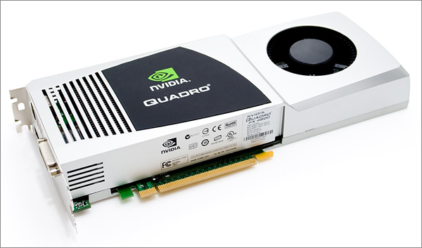
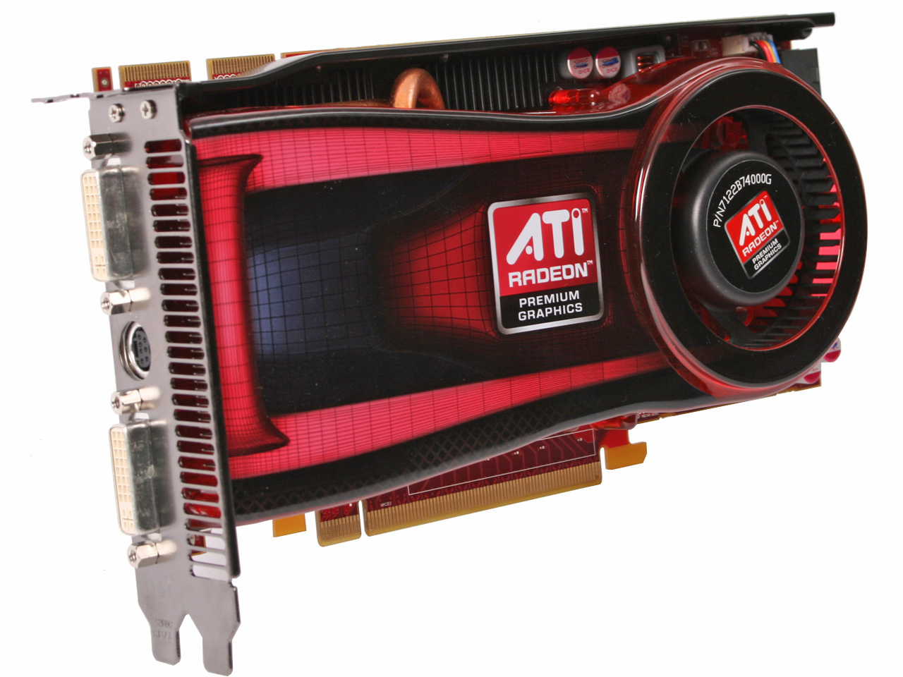
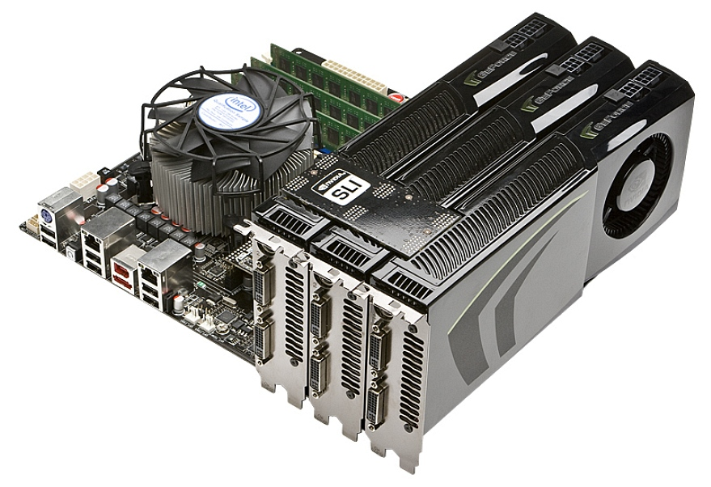
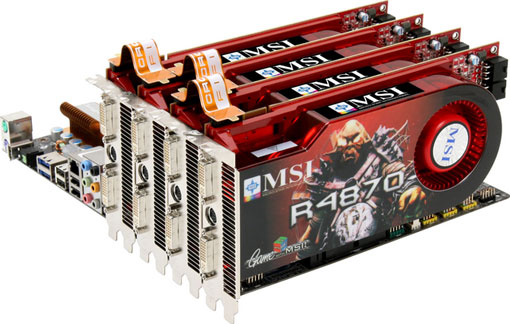

Major Component Description
CPU
The central processing unit (CPU) is the portion of a computer system that carries out the instructions of a computer program, to perform the basic arithmetical, logical, and input/output operations of the system. The CPU plays a role somewhat analogous to the brain in the computer. The term has been in use in the computer industry at least since the early 1960s. The form, design and implementation of CPUs have changed dramatically since the earliest examples, but their fundamental operation remains much the same.  On large machines, CPUs require one or more printed circuit boards. On personal computers and small workstations, the CPU is housed in a single silicon chip called a microprocessor. Since the 1970s the microprocessor class of CPUs has almost completely overtaken all other CPU implementations. Modern CPUs are large scale integrated circuits in packages typically less than four centimeters square, with hundreds of connecting pins. Two typical components of a CPU are the arithmetic logic unit (ALU), which performs arithmetic and logical operations, and the control unit (CU), which extracts instructions from memory and decodes and executes them, calling on the ALU when necessary.  Not all computational systems rely on a central processing unit. An array processor or vector processor has multiple parallel computing elements, with no one unit considered the "center". In the distributed computing model, problems are solved by a distributed interconnected set of processors.
Memory
In computing, memory refers to the physical devices used to store programs (sequences of instructions) or data (e.g. program state information) on a temporary or permanent basis for use in a computer or other digital electronic device. The term primary memory is used for the information in physical systems which are fast (i.e. RAM), as a distinction from secondary memory, which are physical devices for program and data storage which are slow to access but offer higher memory capacity. Primary memory stored on secondary memory is called "virtual memory".  The term "storage" is often (but not always) used in separate computers of traditional secondary memory such as tape, magnetic disks and optical discs (CD-ROM and DVD-ROM). The term "memory" is often (but not always) associated with addressable semiconductor memory, i.e. integrated circuits consisting of silicon-based transistors, used for example as primary memory but also other purposes in computers and other digital electronic devices. There are two main types of semiconductor memory: volatile and non-volatile. Examples of non-volatile memory are flash memory (sometimes used as secondary, sometimes primary computer memory) and ROM/PROM/EPROM/EEPROM memory (used for firmware such as boot programs). Examples of volatile memory are primary memory (typically dynamic RAM, DRAM), and fast CPU cache memory (typically static RAM, SRAM, which is fast but energy-consuming and offer lower memory capacity per area unit than DRAM) . The semiconductor memory is organized into memory cells or bistable flip-flops, each storing one binary bit (0 or 1). The memory cells are grouped into words of fix word length, for example 1, 2, 4, 8, 16, 32, 64 or 128 bit. Each word can be accessed by a binary address of N bit, making it possible to store 2 raised by N words in the memory. This implies that processor registers normally are not considered as memory, since they only store one word and do not include an addressing mechanism.
Hard Disk
A hard disk drive (HDD; also hard drive, hard disk, or disk drive is a device for storing and retrieving digital information, primarily computer data. It consists of one or more rigid (hence "hard") rapidly rotating discs (often referred to as platters), coated with magnetic material and with magnetic heads arranged to write data to the surfaces and read it from them.  Hard drives are classified as non-volatile, random access, digital, magnetic, data storage devices. Introduced by IBM in 1956, hard disk drives have decreased in cost and physical size over the years while dramatically increasing in capacity and speed. Hard disk drives have been the dominant device for secondary storage of data in general purpose computers since the early 1960s. They have maintained this position because advances in their recording capacity, cost, reliability, and speed have kept pace with the requirements for secondary storage.
Mother board
In personal computers, a motherboard is the central printed circuit board (PCB) in many modern computers and holds many of the crucial components of the system, providing connectors for other peripherals. The motherboard is sometimes alternatively known as the mainboard, system board, planar board or, on Apple computers, the logic board. It is also sometimes casually shortened to mobo.
Graphics Card
A video card, display card, graphics card, or graphics adapter is an expansion card
which generates a feed of output images to a display. Most video cards offer various
functions such as accelerated rendering of 3D scenes and 2D graphics, MPEG-2/MPEG-4
decoding, TV output, or the ability to connect multiple monitors (multi-monitor).
Video hardware can be integrated into the motherboard but recently it has been
integrated into the CPU, however all modern motherboards, and even motherboards
from the 90's provide expansion ports to which a video card can be attached. In
this configuration it is sometimes referred to as a video controller or graphics
controller. Modern low-end to mid-range motherboards often include a graphics chipset
manufactured by the developer of the northbridge (e.g. an nForce chipset with Nvidia
graphics or an Intel chipset with Intel graphics) on the motherboard. This graphics
chip usually has a small quantity of embedded memory and takes some of the system's
main RAM, reducing the total RAM available. This is usually called integrated graphics
or on-board graphics, and is usually low in performance and undesirable for those wishing
to run 3D applications; however, the new Ivy Bridge CPU's will contain graphics capable
of running 3D applications. A dedicated graphics card on the other hand has its own Random
Access Memory or RAM and Processor specifically for processing video images, and thus
offloads this work from the CPU and system RAM. Almost all of these motherboards allow
the disabling of the integrated graphics chip in BIOS, and have an AGP, PCI, or PCI Express
slot for adding a higher-performance graphics card in place of the integrated graphics.




SLI is from NVIDIA; Cross-Fire is from AMD.
SLI and Cross-Fire technologies are reflecting the extremely 3D performance of Graphics Cards.